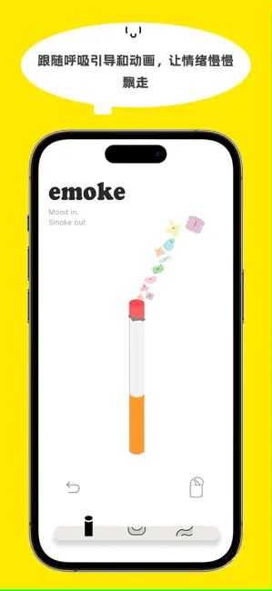

Emoke 迭代了什么？从三个版本看一款情绪记录 app 的执念
没有账号系统、没有云端同步、开箱就是一个烟盒——Emoke 把极简这条路线走得比大多数同类产品都彻底。从 v1.1.2 到 v1.1.7，看它一直在死磕什么。
我手上这版 Emoke 的燃烧动画是流畅的。划完火柴，纸卷从底部往上慢慢烧，灰烬抖落的节奏和火苗跳动几乎同步——这是 v1.1.5 之后的体验。在此之前，旧设备上的用户可能划了火柴点不着、烧到一半卡住，甚至直接跳过燃烧阶段，纸卷"啪"一下掉进烟灰缸。官方在商店评论和更新日志里都回应过这个问题，v1.1.5 的补丁就是专门冲着它来的。
打开 Emoke 的第一眼你看到什么？一个冬天里的纸盒，整整齐齐躺着一排情绪纸卷。没有登录页，没有新手引导弹窗，没有"请先完成 X"的强制流程。启动就能用。这是 Emoke 从第一天起就没有偏离的姿态——我后面会说，它迭代了这么多版本，变的东西很少，不变的东西很多。

来路：三个版本的时间线
样本文档里能看到的版本号只有三个，v1.1.2、v1.1.5 和 v1.1.7。更早的历史文档里没提——这本身就是一个有意思的信号。
v1.1.2 是一个"补漏"版本。它修复了启动时可能卡在白屏的问题，同时加了本地数据导出。白屏修复关联的是恢复购买流程的稳定性——说明 Pro 会员体系上线初期，在 Apple/Google 的内购回调链路上出过问题。数据导出则是另一个信号：它明确告诉用户"你的数据只在本地，自己备份好"。去官方下载页面看一眼就能确认——Emoke 从一开始就不打算做云同步，这点在后来的文档里写得很直白——情绪记录是最私人的内容，上传云端意味着服务器运营方必须有访问控制和审计，而他们不想让用户为了"有个备份"就被迫注册账号。
v1.1.2 把这两件事一起做了：一边修启动和恢复购买的 bug，一边把数据导出的"手动备份"通路给补上。逻辑很清楚——既然不做云端，那至少给用户一个自保的手段。
v1.1.5 是一次对核心体验的补课。从官网和应用商店的更新日志里能看到三条：修复旧设备上燃烧动画无法显示的问题、优化界面响应速度与加载性能、改善分享模式跨设备连接体验。
燃烧动画是 Emoke 的灵魂交互——选纸卷、划火柴、看着它烧完、把情绪写进去。如果这个环节卡住了，整个产品的仪式感就塌了。v1.1.5 之前，低端 Android 和旧款 iPhone 上 GPU 性能不够，动画会掉帧或者直接不渲染。这个补丁说明团队在初期上线时低估了设备碎片化带来的影响。
界面响应速度和加载性能的优化，放在燃烧动画修复同一次更新里，也能看出问题的关联性——GPU 资源被动画吃掉之后，界面的其他部分就会变慢。v1.1.5 之后这两条一起解决，算是对"性能基线"做了一次校准。
分享模式优化是这次更新里唯一一个和"核心仪式"无关的改动。Emoke 有一个跨设备分享情绪记录的功能——在没有账号系统的前提下，它靠的是设备之间的本地连接。这个功能的优先级在三个版本里排最后，也暗示了团队对"主路径"的定义：点烟、燃烧、写情绪——其他的都是锦上添花。
v1.1.7 只提到了分享模式的连接体验改善，这是 v1.1.5 那条的后续打磨。一个版本如果只动这一件事，说明主流程已经稳定了。
规律：一直在死磕什么
从这三个版本看下来，Emoke 团队的优先级非常清晰。
第一优先级是核心仪式的完成度。选纸卷、划火柴、燃烧、写情绪——这条主路径上的任何 bug 和性能问题，都在版本列表里排最前面。白屏、燃烧卡顿、界面响应慢，这些问题不解决，整个产品就没法成立。
第二优先级是隐私和极简的边界。不做账号、不做云端，这两个决策从 v1.1.2（甚至更早，只是文档没写）开始就没有动摇过。数据导出的存在，恰恰是在"不做云端"这个前提下给用户的兜底，而不是在暗示"以后可能加云端"。emoke文档里甚至直接把对比竞品（Day One、Moodpath、Reflectly）的云同步功能拿出来当反面——Emoke 选的是"极简 + 零信任"，不追求功能最全，追求"打开就能用、点一下就能记、没人能看到"。
什么一直不管？云同步、多设备、账号体系、社区功能。样本文档里没有任何一个版本更新提到要做这些，FAQ 里关于"将来加云端吗"的回答也是明确的克制——如果真加，会是可选的、端到端加密的、不关联身份的。但当前版本没有。

预判：下一步大概率怎么走
从迭代节奏看，Emoke 的更新频率是两到四周一个版本，每次改动都很克制——v1.1.2 是补漏，v1.1.5 是性能和核心交互修复，v1.1.7 是分享体验微调。没有大版本的架构升级，没有突然加入新功能类别。
照这个路线推，下一步的走向大概是：
第一，继续打磨核心仪式的设备兼容性。燃烧动画的问题在 v1.1.5 修了，但 Android 设备碎片化的坑永远填不完——不同芯片组、不同系统版本、不同厂商的省电策略，都可能影响 GPU 渲染。后续版本大概率会继续覆盖更多边缘设备的适配。
第二，Pro 会员体系的完善。Pro 权益在文档里提到了（主题、字体的高级选项），但 v1.1.2 的白屏修复关联恢复购买流程，说明内购链路初期还不够稳定。会员体系的打磨可能是中期的一个重点方向。
第三，还是不会加云端同步。团队已经把"零信任"写进了产品定义，除非整个产品定位发生变化，否则这条线不会动。手动数据导出可能会继续优化，比如导出格式更通用、恢复流程更顺畅，但云端这条路短期内看不到迹象。
当然这些只是从迭代规律推的，不是官方口径。Emoke 的开发者在文档里保持了一种低调但明确的姿态——他们不想做一款功能最全的情绪日记，只想把"打开烟盒、点一根纸卷、烧掉情绪"这件事做到位。
现在打开 Emoke，首页的烟盒摆在那里，纸卷整整齐齐。划火柴，火苗跳起来，灰烬往下掉——这个流程从第一天到 v1.1.7，核心体验没有变。变的是它在越来越多的设备上跑得更稳了。这大概就是一款"执念型"产品的迭代逻辑：不追风口，不堆功能，把一件事做到底。